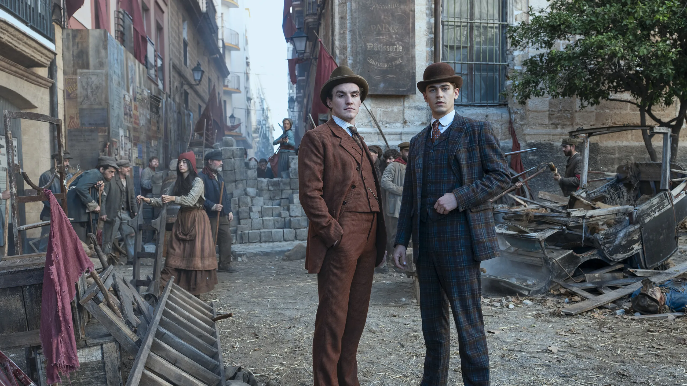

Sherlock Holmes
El detective que convirtió la lógica en un arte
¿Quién es Sherlock Holmes?
Sherlock Holmes es un detective consultor creado por Sir Arthur Conan Doyle en 1887. Vive en el 221B de Baker Street, Londres, y se dedica a resolver crímenes que la policía no puede, usando un método revolucionario para su época: la deducción lógica basada en la observación minuciosa.
Holmes no es un héroe tradicional. Es frío, excéntrico, a veces arrogante, pero absolutamente brillante. Su mente funciona como una máquina diseñada para filtrar lo inútil y conservar solo lo relevante. Para él, un crimen es un rompecabezas intelectual, no un asunto emocional.
Su contraparte humana es el Dr. John Watson, médico militar y narrador de la mayoría de las historias. Watson equilibra a Holmes: aporta empatía, moral y una perspectiva más cercana al lector, mientras documenta los casos y humaniza al detective.
